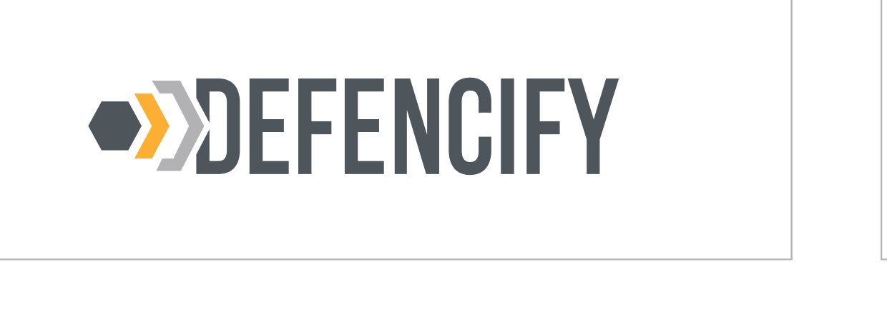
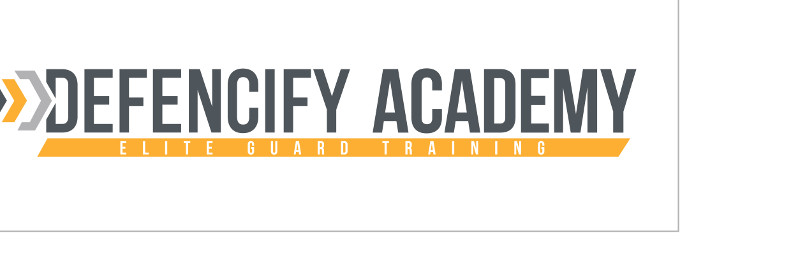
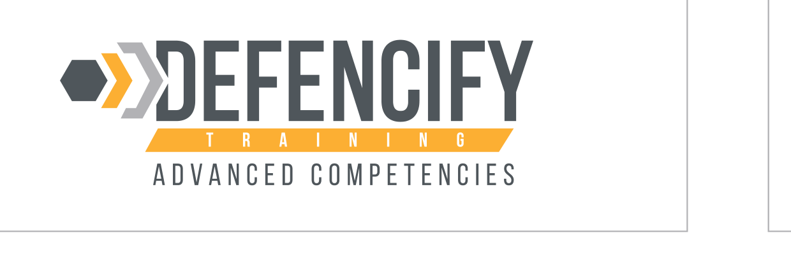
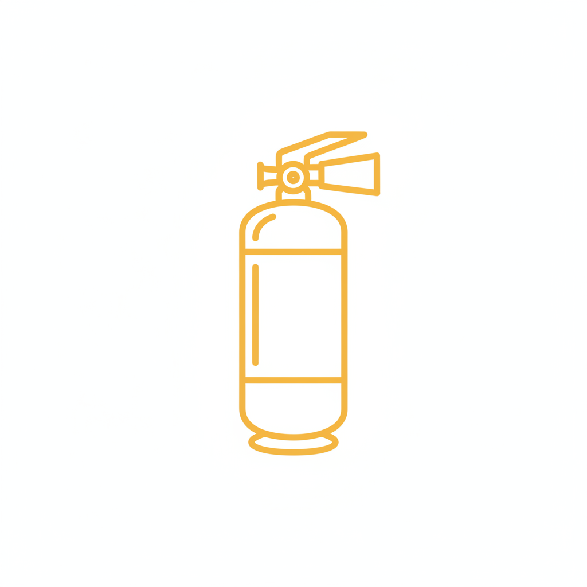
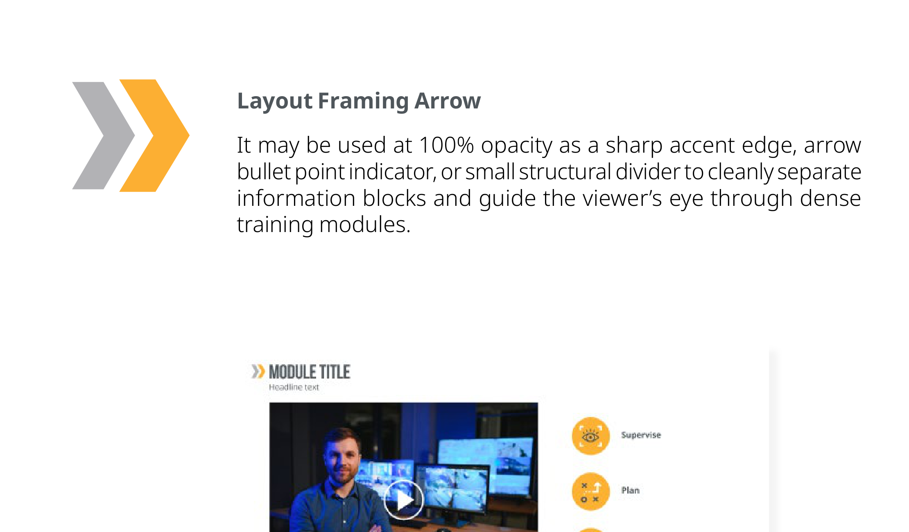
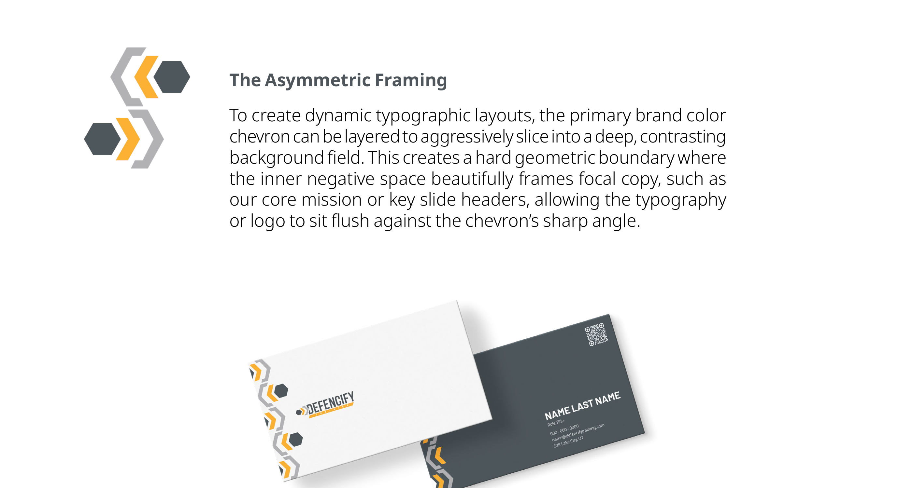

Minimum clear space
1× hex
1× hex

The external space required to maintain the logo proportions is determined by the dimension of its hexagon icon.
This brand book defines the visual standards for Defencify, ensuring that our training platform maintains a professional and consistent identity across all educational materials. By following these guidelines, we provide a reliable and cohesive learning environment for our users.
Founded in 2017 by Russ Willmon, a decade-long veteran of the security industry. After seeing how outdated war stories and dull PowerPoint slides drove off 25% of students on their first day, Russ envisioned a solution.
He built Defencify to replace ineffective live instruction with interactive eLearning standards, simulation games, and scenario-based activities.
To transform security guard training through a scalable, convenient online platform that is accessible, compliant, and engaging. We aim to help security companies outsmart the competition by becoming the strongest players in the game.
The Defencify logo is the visual cornerstone of our brand. Use the approved lockups and clear space in every application so the mark reads with consistency across product, marketing, and print.
The Defencify logo is our most valuable visual asset. To keep our brand looking sharp and unified, please follow these simple rules for sizing, placement, and color. These standards are designed to help you execute our visual identity with precision and clarity.
The external space required to maintain the logo proportions is determined by the dimension of its hexagon icon.
Do not scale the logomark smaller than 100px wide to ensure it remains legible on all screens.


To support our growing catalog, we have established specific design treatments for different product tiers and categories.

A few specific don'ts to lock down. These keep the mark legible at every size and across every surface. Treat them as the floor, not a checklist.
Use the logo on white or dark backgrounds to ensure it remains clear and readable. Check this list to ensure your design doesn't accidentally misuse our brand elements or compromise legibility.
Our color scheme balances brand recognition with functional digital utility. Rooted in a high-energy Primary Yellow and anchored by a functional suite of Neutral Greys, the system establishes a clean, modern workspace for learners. A strategic Accent Blue acts as a high-visibility signpost, reserved strictly to guide users toward primary interactive actions and critical interface updates.
Our color scheme balances brand recognition with functional digital utility. Rooted in a high-energy Primary Yellow and anchored by a functional suite of Neutral Greys, the system establishes a clean, modern workspace for learners. A strategic Accent Blue acts as a high-visibility signpost, reserved strictly to guide users toward primary interactive actions and critical interface updates.
As our main brand driver, Yellow sets the tone of the platform. Because yellow has high natural luminance, it cannot host light text. It is optimized below to serve as a high-energy background system or heavily darkened into rich gold shades for heavy visual assets.
Blue is removed from the general layout background and elevated to a strategic tool. It is used intentionally to guide the learner's eye to primary actions, interactive links, success markers, and final submission buttons.
Our greys handle the heavy lifting for layout structure, borders, application canvases, and readable reading blocks, anchoring the vibrant primary yellow. Core dark and light greys have been expanded into a structural scale.
Each core color expands into a scale, paired against WCAG 2.1 AA contrast. Use these tiers when text and surface compositions require predictable hierarchy.
As an online learning provider, ensuring text legibility and user interface navigation is a core compliance requirement. This section establishes an expanded color scale structured around a Primary Yellow and Grey identity, with Blue acting as a high-visibility structural accent to satisfy the Web Content Accessibility Guidelines (WCAG) 2.1 AA standards.
Core application accent panels, header backgrounds, or highlighted course blocks.
Primary Brand Yellow. Main interface focal points, category badges, and primary layout blocks.
Active states for yellow components, heavy illustration borders, or icon fills.
Structural layout dividers, course card borders, input field borders.
Core Light Grey. Disabled component states, secondary divider treatments.
Core Dark Grey. Metadata, captions, secondary body descriptions, tracking labels.
Light informational alerts, interactive hover fields, or selected course states.
Core Brand Blue. Inline text hyperlinks, focused input states, and system success indicators.
Deep contrast interactive states, navigation indicators, or high-priority action text.
Typography brings our brand to life. To keep our layouts clean and consistent, we use a specific set of typefaces designed for high impact and easy reading.
Typography brings our brand to life. To keep our layouts clean and consistent, we use a specific set of typefaces designed for high impact and easy reading.
Use this two-line display treatment for high-impact campaign, course hero, recruitment, social cover, and sales collateral headlines. It is the approved embedded-text style when generated assets need a Defencify headline inside the image.
These layout examples show the type hierarchy in action, demonstrating the ideal balance between headers, sub-headers, and body text. Use them as a blueprint to keep communications clean and structured.
These layout examples show our type hierarchy in action, demonstrating the ideal balance between headers, sub-headers, and body text. Use these as a blueprint to keep our communications looking clean and structured.
Approved by state instructors. Trusted by operators.
At Defencify, we believe there is a better way to do security officer training. A more valuable, less cumbersome way where security employees get the knowledge that they need to be successful in the field.
To transform security guard training through a scalable, convenient online platform that is accessible, compliant, and engaging. We aim to help security companies outsmart the competition by becoming the strongest players in the game.
© 2026 Defencify LLC. All rights reserved. Defencify and all related names, logos, product and service names, designs, and slogans are trademarks of Defencify LLC. Unauthorized use or reproduction is strictly prohibited.
Icons clarify actions, signal status, and reinforce the brand without competing with the wordmark. The library is intentionally minimal, geometric, and built around the same hex + chevron grammar that anchors the rest of the system.
To support the dynamic needs of the Defencify training platform, we utilize Lucide as our primary icon library. Lucide provides a vast, highly scalable, and modern open-source asset repository that aligns perfectly with our clean digital interface. By standardizing our design and development teams on a single, expansive library, we ensure total consistency across product interfaces, marketing collateral, and educational slide decks.
Our icons are designed to be flexible. Whether you're working on a white landing page or a dark-themed presentation, use these color variations to keep our visual language clear. Always prioritize high contrast to ensure every symbol is instantly recognizable at any size.
Outline on white · Reverse on Yellow 500 · Reverse on Grey 700. Always prioritize high contrast.
To maintain a precise visual DNA, a custom, foundational set of icons has been designed specifically for this brandbook. This curated set serves as our reference. When selecting new icons, always compare them against this master reference set to ensure they match the established line weights, corner radiuses, and geometric harmony.
Eight additional icons commissioned to extend the Kajae reference set with subject-specific marks for security officer training modules. Generated using the prompting methodology documented in chapter 07 (AI Imagery), each icon respects the same 24x24 grid, 2px stroke weight, outline-only treatment, and Yellow 500 color as the Kajae set. Drop them in alongside the original 16 wherever a module-specific symbol is needed.
Communication module
Patrol equipment
Emergency response

Fire safety
Surveillance training
Mobile security
Access control
Hazard awareness
How these were made: each icon used the standard Google Gemini model (free tier) via gemini.google.com with the Defencify brand context block from chapter 07, plus a single subject-specific request line ("Single handheld two-way radio walkie-talkie icon... outline only, no fills, no shadows, no gradients. Yellow brand color hex FCAF32 outline at 2px stroke weight on pure white background. 24x24 design grid aesthetic..."). The set demonstrates the high-volume batch routing from chapter 06 producing visually consistent output across 8 different subjects.
Designed on a 24×24px grid. Maintain consistent optical alignment across every icon, no off-grid tweaks.
1.5–2px stroke, no fills. Stroke weight stays constant across the set, scale up by exporting at larger sizes.
Color follows surrounding text, or Yellow 500 when used as an accent. Never inline-edit a Lucide icon to add brand color.
Reserve at least 4px of clear space around the icon bounding box. Pair with body text using flex with the gap token.
To build strong brand recognition beyond the primary wordmark, the unique chevron geometry from the Defencify logo is utilized as the signature supporting graphic element. It functions as a dynamic visual anchor across user interfaces, courseware layouts, and marketing collateral.
To build strong brand recognition beyond the primary wordmark, the unique chevron geometry from the Defencify logo is utilized as our signature supporting graphic element. This element functions as a dynamic visual anchor across our user interfaces, courseware layouts, and marketing collateral. This creates an immediate, intuitive connection back to the core brand identity without relying on constant logo placement.
It may be used at 100% opacity as a sharp accent edge, arrow bullet point indicator, or small structural divider to cleanly separate information blocks and guide the viewer's eye through dense training modules.

To create dynamic typographic layouts, the primary brand color chevron can be layered to aggressively slice into a deep, contrasting background field. This creates a hard geometric boundary where the inner negative space beautifully frames focal copy, such as our core mission or key slide headers, allowing the typography or logo to sit flush against the chevron's sharp angle.

Imagery shows the people, environments, and moments behind the platform. Choose photography that feels credible, modern, and on-the-job. Avoid stock cliches and anything that softens the security context.
Our brand aesthetic relies on warmth and authenticity. When selecting or shooting imagery, look for natural lighting and approachable, real-life subjects. We avoid AI-generated content in favor of genuine photography that feels personal and inviting. This commitment to genuine representation ensures that our visual communications remain relatable and trustworthy to our audience.
Real officers in real environments. Natural light, mid-shift, walkie-talkie in hand, no posed studio glamour.
Front-line officers in uniform. Close-cropped, natural light, no studio glamour. Real environments, real subjects.
Group instruction, scenario stations, training-room debriefs. Mixed-demographic, never military-intimidating.
Applications show the system in motion: social posts, banners, email signature, course layout, and print assets. Use these as templates, not exhaustive specs. The rhythm matters more than the literal sample.
Bringing the brand to life. This section showcases how our logo, typography, and imagery work together in practice. Whether it's a social media post or a corporate presentation, these examples illustrate the ideal balance of our design elements. Use these mockups as a reference to keep our brand looking sharp and consistent in any context.
Three application contexts, three example tool choices, three sample outputs each to demonstrate consistency. Tool choices here are illustrative, not prescriptive: ChatGPT, Nano Banana Pro, and standard Google Gemini overlap significantly in capability, and any of them can produce on-brand work for any of these contexts with the right prompt. The selection below reflects one defensible mapping based on cost, strength, and account-access friction. Anyone on the Defencify team can recreate (or swap the tool for) these outputs using the prompting framework documented further down this page. Notice how the same model produces visually-aligned outputs across varied subjects when the brand context block leads the prompt.
Real human subjects, natural soft light, real environments, badge legibility. Three subjects, three settings, one consistent visual register. Replaces what used to require a paid photo shoot or stock licensing.
Header art for training modules, certification marks, training posters. Brand-typography text rendered cleanly inside the image. Chevron and hex motifs woven into the layout. The three samples share the same yellow accent rhythm, the same charcoal headline color, the same chevron decorative grammar.
Batch icon production where you need 50-100 module marks at consistent geometric quality. Three icons, three subjects, one consistent stroke weight, one consistent color register, one consistent outline-only grammar. Single brand color, flat stroke, no shadows, no photorealism. Cost per image is the deciding variable.
| Tool | Strengths | Weaknesses | Best for |
|---|---|---|---|
| Nano Banana Pro Google AI Studio |
Specialist photorealistic register. Cinematic light, believable depth, real skin texture. Renders brand text legibly on uniforms and badges. | Narrower range than ChatGPT (no strong illustration mode). Higher cost than free Gemini. Currently preview-tier so pricing and availability may shift. | When you specifically want a photographic register and want a dedicated tool for it. ChatGPT can do this too; pick by familiarity and account access. |
| ChatGPT image generation chatgpt.com · GPT Image 2 |
Most versatile of the three: handles photorealism, stylized illustration, and embedded-text graphics. Renders legible typography inside images, which neither Gemini model handles reliably. | Requires a ChatGPT Plus or Team subscription. No real downside on output quality. | Embedded text inside an image is the one context where ChatGPT is the obvious pick. For everything else it overlaps fully with the Gemini options. |
| Google Gemini (standard) gemini.google.com |
Free with any Google account. Fast. Clean flat-vector geometric output. Respects icon-system constraints when prompted with grid and stroke specs. | Photographs read as cartoon, not real. Text inside images is scrambled. | When cost is the deciding variable and the asset is flat-vector. ChatGPT and Pro will produce similar icon output if you're already in those tools; this just keeps the spend at zero. |
Every tool below has a public web interface. Sign in with the noted account type, paste the brand context block from the next section, then add your specific image request.
Sign in with any Google account. In the model picker on the right, choose gemini-3-pro-image-preview. Set Response modality to "Image". Paste the brand context block, then your prompt. Image renders in the right panel; right-click to save.
Powered by GPT Image 2 (replaced DALL-E 3, May 2026)
Requires a Plus or Team subscription. Open a new chat and either say "generate an image of..." or click the image button. Paste the brand context block, then describe the image. ChatGPT routes the request to GPT Image 2 automatically.
Free with any Google account. Type "generate an image of..." plus the brand context block and your spec. Right-click the result to save. Best used when generating many similar assets in one session.
All three tools have meaningful overlap. The decision rule is a starting point, not a fence. Pick the tool the brand context loads into fastest for your workflow.
Web edition addendum: not in the original Clementina Villarroel · Kajae Brandbook v1. This chapter is for anyone on the Defencify team producing imagery for marketing, training, social, or recruitment. Three AI tools are documented here, each accessible through a public web interface, each with overlapping strengths. The point is optionality, not a ranking: pick the tool that fits the asset and the account you already have access to. Pull from the existing brandbook first whenever the asset already exists.
Prompt: "security officer on duty at his post, mid-shift moment with walkie-talkie in hand" combined with the Defencify brand context block (see the Prompting Framework section below). Each tool ran the identical prompt three times so you can see within-model consistency on the same input. Tested 2026-05-23.
Powered by GPT Image 2 (replaced DALL-E 3 in May 2026)
The most versatile of the three. Capable across photorealism, stylized illustration, and embedded-text graphics. Especially strong at rendering legible typography inside images, which neither Gemini model handles reliably. Familiar interface for anyone already using ChatGPT for writing.
Free for general use, no paid account required. Cleanest tool for flat-vector geometric work (icons, patterns, simple brand marks) when grid and stroke specs are explicit. Photography skews illustrated rather than editorial-real, and embedded text scrambles, so reserve this for icon-shaped work.
Photorealistic editorial register: cinematic light, real environments, genuine human subjects. A specialist tool with a single strong lane. When you know you need a real-photo feel and nothing else, this is a clean choice. ChatGPT can produce similarly photorealistic output; pick by familiarity, account access, or workflow fit.
Officer portraits, training scenes, on-the-job moments, brand photography for ads and landing pages. Either ChatGPT (GPT Image 2) or Google AI Studio (Nano Banana Pro) work well; pick by account access. Pull from the Imagery chapter first if a similar shot already exists.
Course module heroes, training posters, infographics, branded marks with embedded labels. ChatGPT (powered by GPT Image 2). No other tool renders text inside images this cleanly.
Icon sets, repeating patterns, 20+ images where consistency and cost matter more than realism. Google Gemini on the free tier.
Logo lockups, custom icons, chevron supporting element, the 8 imagery photos. Pull from the relevant chapter of this brandbook. Do not regenerate what is already canonical.
Every generation starts with the same five-part structure. Skip a part and the output drifts off-brand. Follow all five and the model autonomously produces yellow-and-charcoal Defencify visuals without correction.
Open every conversation by pasting the brand context block (next page). Colors, voice, what to avoid.
Be specific. Not "a guard": "security officer in modern uniform with walkie-talkie in hand". Name the role, dress, posture, action.
"Modern commercial lobby, soft morning light through windows" beats "office, well-lit". Light direction and quality is half the realism.
"Rule of thirds with subject in the right third, asymmetric framing, generous negative space on left for headline text overlay". State the shot.
Explicit negatives matter: "NOT military aggressive, NOT studio glamour, NOT stock-cliche, no excessive sci-fi or shields of light".
Open ChatGPT, Gemini, or AI Studio. Paste this entire block as your first message before asking for any image. The model carries it through the conversation; you only need to add your specific request after.
Brand: Defencify Training, an online security officer training platform. Modern, professional, credible, approachable. Not military, not intimidating, not editorial fashion.
Colors (use these hex codes only): Yellow #FCAF32 (primary), Charcoal #2C2F31 (headlines), Grey #4F575C (body and ink), Navy #0E1940 (deep contrast accents only), White #FFFFFF (default background). Do not use any other colors. No purple, pink, neon, or fashion-magazine palettes.
Typography (if text appears in the image): Barlow Black or Bold UPPERCASE for display headlines, Noto Sans regular for body. For the approved two-line campaign lockup, use line one in Grey 700 #4F575C and line two in Yellow 500 #FCAF32, 0 tracking, tight 0.92 to 0.96 line height. Never decorative serifs, never Comic Sans.
Logo and supporting element: Defencify logo is a hex plus two chevrons plus the DEFENCIFY wordmark with optional yellow TRAINING band. The chevron alone is the signature supporting graphic, often yellow on a deep background. Do not redraw the logo from scratch in image generation; reference it from the brandbook when needed.
Imagery rules for photographic outputs: Real officers in real environments. Natural light (golden hour, ambient indoor). Mid-shift moments with walkie-talkie, alert posture, at a post. Approachable demeanor, professional but human. Mixed demographics. Modern uniforms, not period costume. Avoid AI cliches, no shields of light, no superhero poses, no excessive sci-fi visuals.
Composition rules: Clean, generous whitespace. Asymmetric is fine, do not over-center. Subjects in the right or left third by rule of thirds. Backgrounds: white, very light grey, or natural environment for photographs.
Now generate: [your specific image request goes here]
Tip: in ChatGPT and Google AI Studio you can save this block as a Custom Instruction or System Prompt so you don't need to paste it every session. In gemini.google.com, save it as a Gem.
Three copy-paste-ready prompt templates. Add the brand context block above first, then paste one of these.
"Generate a recruitment hero photograph: confident smiling security officer in modern dark uniform with Defencify badge on the chest, holding a walkie-talkie at shoulder height, eye contact with camera, soft morning natural light through tall office windows, modern commercial lobby softly blurred in background with greenery, rule-of-thirds composition with subject in the right third, generous negative space on the left for headline overlay, editorial photography style, photorealistic, NOT military aggressive, NOT studio glamour."
"Generate a course module hero illustration with the large bold text 'MODULE 04' and beneath it 'DE-ESCALATION' rendered cleanly in Barlow Bold uppercase. Use Defencify yellow #FCAF32 and dark charcoal #2C2F31. Decorate with yellow chevron and hex motifs as graphic elements around the title. Include two simple illustrated figures of a security officer and a civilian in a calm role-play moment. Flat illustration style, depth from layered shapes, white background with a yellow accent panel on the left third. Text must be legible and centered as the focal point."
"Generate a single training module icon: a simple shield outline with a checkmark inside, flat geometric style, yellow #FCAF32 outline at 2px stroke weight on a pure white background, designed for a 24x24 design grid, no shadows, no gradients, no dimensional depth, matches a clean Lucide-style icon system. Output should look like a vector icon ready for export."
Ask the tool to generate 3 to 4 variations of the same prompt. The first output is rarely the best. Pick the strongest and refine from there.
When something is almost right, say what to change: "Keep everything, but make the light warmer and move the subject one step to the right." This anchors what is working.
All three tools accept image uploads. Drag in a brandbook page or an existing photo and say "match this lighting and color palette". Reference images outperform any amount of prose description.
For most asset types the three tools overlap heavily. The one place ChatGPT (GPT Image 2) has a hard advantage is text rendered inside the image, which the Gemini models still scramble. If your asset doesn't need typography embedded in the image, use whichever tool you already have open.